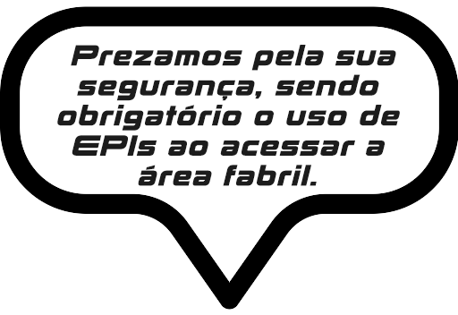
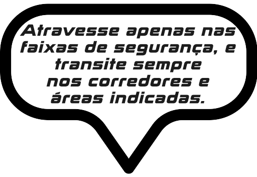
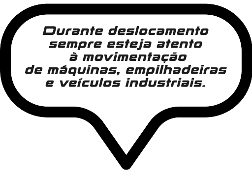

<html>  

  <script src="https://aframe.io/releases/1.2.0/aframe.min.js"></script>
  <script src="https://cdn.jsdelivr.net/gh/donmccurdy/aframe-extras@v6.1.1/dist/aframe-extras.min.js"></script>
  <script src="https://jeromeetienne.github.io/AR.js/aframe/build/aframe-ar.js"></script>

  <script>
    AFRAME.registerComponent('sound', {
      init: function () {
        
        var sceneEl = document.querySelector('a-scene');         
        
        sceneEl.addEventListener('play', function () {
          sceneEl.querySelector('a-sound').components.sound.playSound();  
        });
        
        sceneEl.addEventListener('pause', function () {
          sceneEl.querySelector('a-sound').components.sound.pauseSound();  
        });
        
        sceneEl.addEventListener('stop', function () {
          sceneEl.querySelector('a-sound').components.sound.stopSound();  
        });
        
        var soundComp = document.querySelector('[sound]').components.sound
        
      }
    });
  </script>
  
  <body style="margin : 0px; overflow: hidden;">

    <a-scene renderer="logarithmicDepthBuffer: true; colorManagement: true; sortObjects: true;" embedded arjs="sourceType: webcam; detectionMode: mono_and_matrix; matrixCodeType: 3x3;">

      <a-assets> 
        <a-asset-item id="boneco" src="https://raw.githubusercontent.com/nucleosistemasit/ar_cpmc/master/3d/Bia.gltf"></a-asset-item>
        <!-- 
          
          
          
          
          
          
         -->
         <audio id="audio" src="audio/foca.mp3" preload="auto"></audio>
      </a-assets>

      <a-marker type="barcode" value="3">
        <!-- 
        <a-entity rotation="-90 0 0" position="0 0 1.65">
          <a-image src="#frase_1"></a-image>
        </a-entity>
        -->
        <a-entity id="boneco_1" gltf-model="#boneco" position="0 0 0.65" rotation="-90 0 0" sound="src: url(audio/camila.mp3); on: click" scale="2 2 2" animation-mixer ></a-entity>
      </a-marker>

      <a-sound sound src="src: url(audio/foca.mp3)" autoplay="true" loop="true" volume="3" position="0 0 0"></a-sound>

<!--       <audio id="audio" src="audio/audio.mp3" ></audio> -->

      <a-camera>
      </a-camera>

    </a-scene>  

  </body>  

  <script>

    var sound_entity = document.querySelector('[sound]');
    sound_entity.components.sound.playSound();
    
    function play(){
      var audio = document.getElementById("audio");
      audio.play();
    }
    
  </script>
  
</html>
